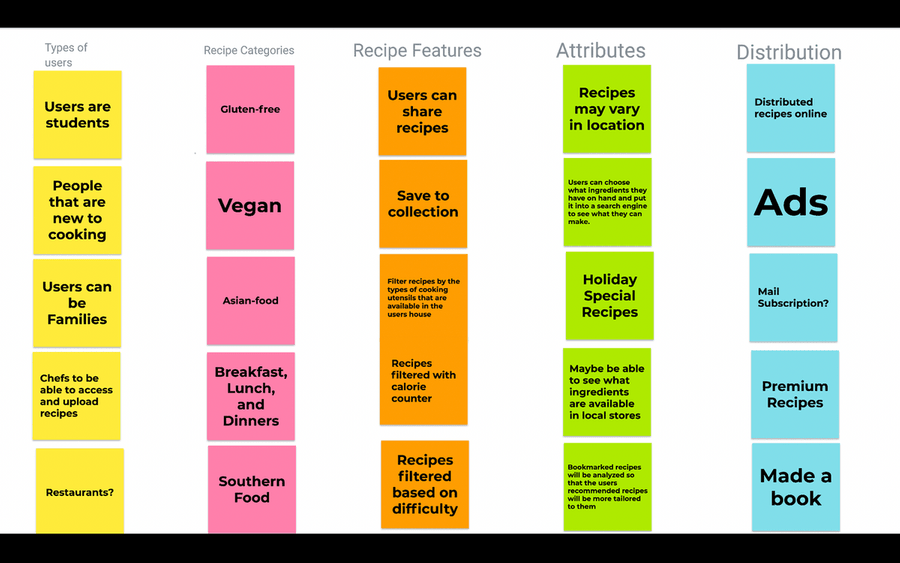
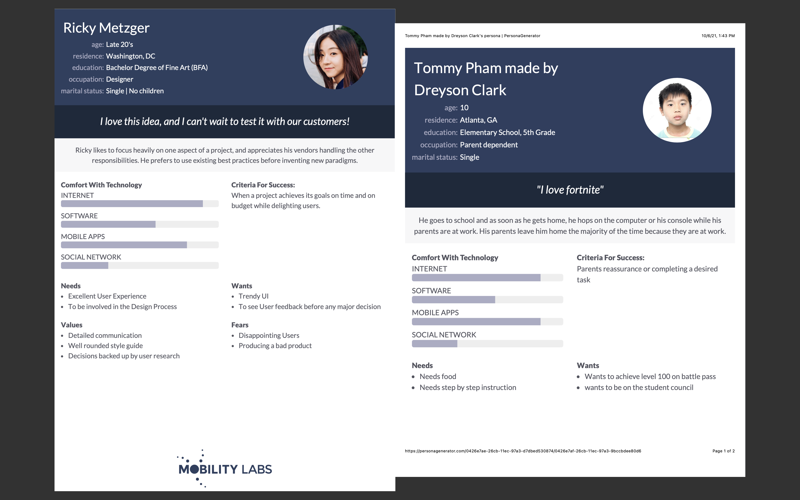
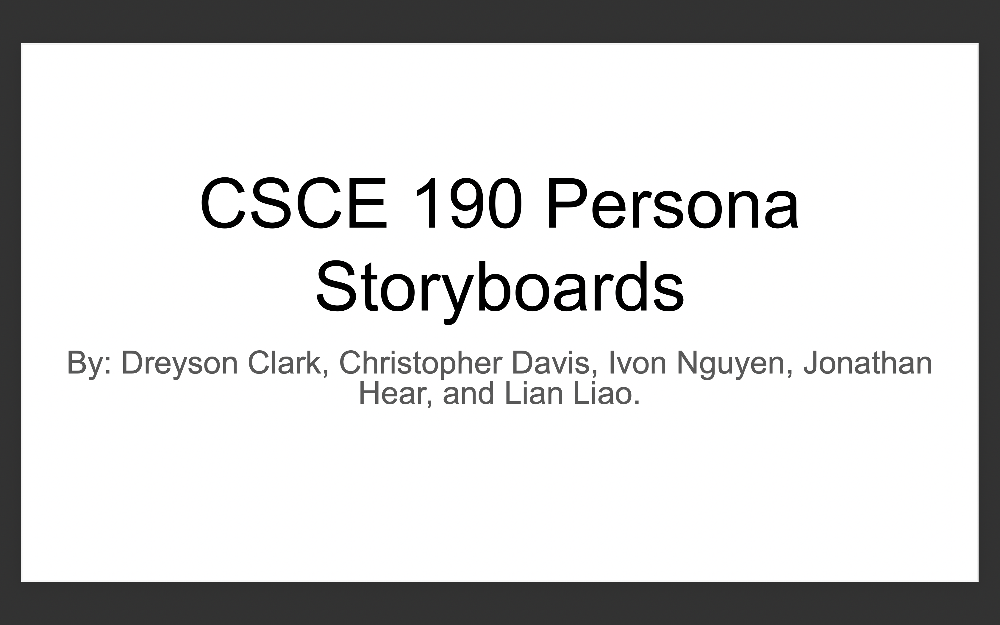
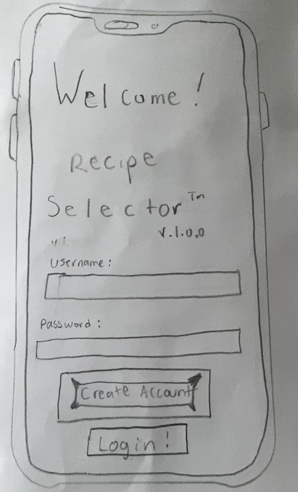
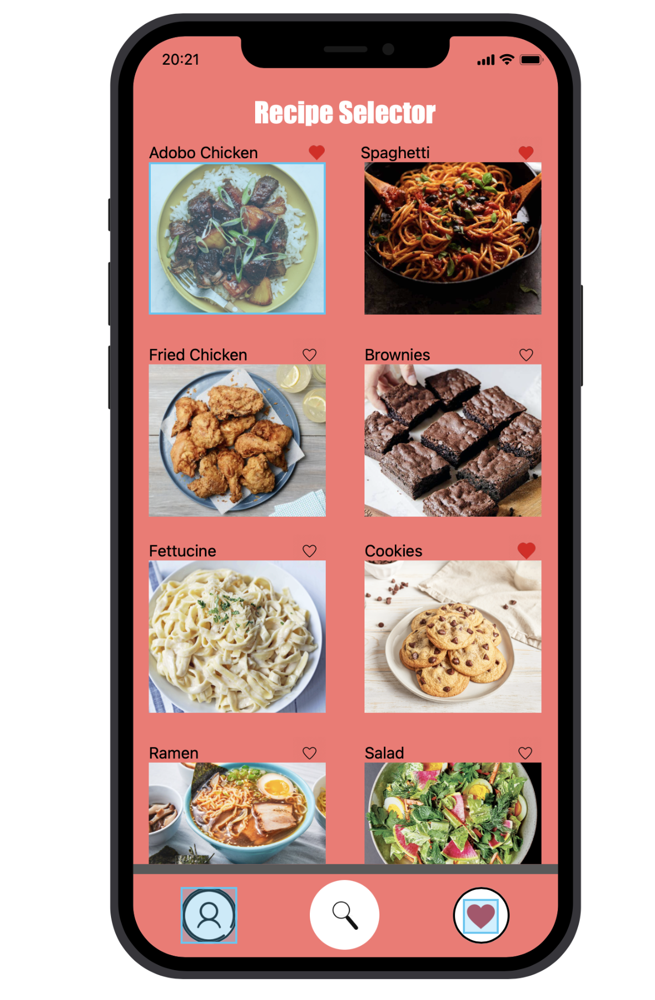

Problem Statement: Recipe Selection

Students are frustrated because they are using more money on eating out due to the lack of cooking skills. Our solution should provide a way to access recipes using the ingredients/groceries in their immediate area.
Affinity Diagram: Recipe Solutions
My group and I created a google jam to find out some solutions on what recipes should do and what they would look like for our users.
Persona: 5 Personas for Recipe Solutions
My group and I created personas for a typical recipe selection user..
Storyboard: 5 Scenarios
My group and I created storyboard scenarios in which our personified users might typically use our app
Sketches: 5 Team Sketches

A Rough idea that I created to sketch what I believe our application would look like.
Paper Prototype
A youtube video of my paper Prototype for the Recipe Selector app.
High-Fi Prototype
A interactive high-fi Prototype for the Recipe Selector app.